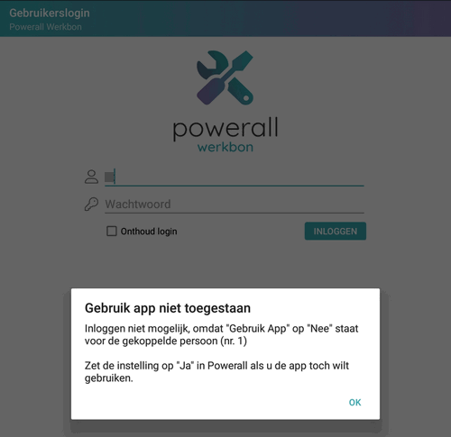
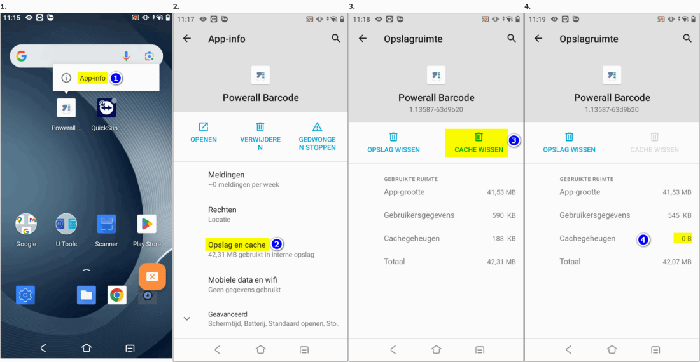
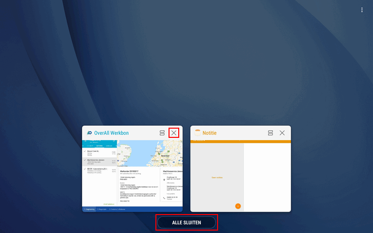
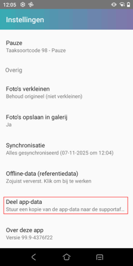
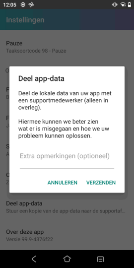

Op het tabblad Transacties worden de transacties / historie weergegeven.
-
De werkorder transacties van de laatste 2 jaar of de laatste 10 transacties worden getoond.
- Zie ook Registratie en Orderdetails
In dit hoofdstuk staan de meestgestelde vragen over de Werkbon App.
Opmerking: De Werkbon App kan alleen gebruikt worden op toestellen met Android 6 of hoger, voor meer informatie, zie Android-versies .
Top FAQ's
Op het tabblad Transacties worden de transacties / historie weergegeven.
De werkorder transacties van de laatste 2 jaar of de laatste 10 transacties worden getoond.
De artikelen die gescand zijn, worden getoond zodra de app weer geopend wordt.
Meldingen
De ingelogde gebruiker is in Powerall Connect nog niet geautoriseerd om de Werkbon App te gebruiken
of
de gebruiker is niet goed gekoppeld aan de persoon of personeelscode.

Controle gebruiker
Om dit te doen, doorloopt u de volgende stappen:
Ga in het systeemmenu naar Systeembeheer > Onderhoud gebruikers.
Geef het gebruikersnummer in.
Controleer of bij de betreffende administratie het juiste personeelscode staat (in de kolom Pers.).
Personeelscode 2 is aan deze gebruiker gekoppeld, zie 
Om dit te doen, doorloopt u de volgende stappen:
Ga naar Onderhoud personeelscodes (BTP).
Geef de personeelscode in.
Ga naar tabblad Werkbon app.
Zet Gebruik werkbon app op Ja.
Log opnieuw in.
De melding Webservice is niet bereikbaar. Controleer uw internetverbinding.' verschijnt als er geen verbinding is met het Powerall Connect.
Controleer de WiFi of internetverbinding.
De melding Geen internetverbinding. Planning kan niet worden bijgewerkt' verschijnt als er geen (wifi) verbinding is met het internet.
Controleer de WiFi of internetverbinding.
Bij het toevoegen van een nieuwe servicemelding is het mogelijk dat je deze melding krijg.
Ga naar Instellingen (linksboven: ).
Blader naar beneden naar Offline-data (referentiedata).
Klik hierop om bij te werken.
Offline data wordt opgehaald.
Zojuist ververst, verschijnt.
Als fout blijf terugkomen, neem contact op met de helpdesk.
Deze melding kan bij het opstarten van de Powerall Werkbon app verschijnen.
Als deze servicemelding of werkorder openstaat, is het niet mogelijk om de status bij te werken.
Werkbon App en serviceproces
In onderstaand proces wordt weergegeven welke stappen doorlopen worden, wanneer een planner een servicemelding inplant voor een (buitendienst) monteur, zie ook Werkverzoek .

Werkbon App proces (met planner)
De groene blokken geven de stappen weer die door de planner gedaan worden. In deze situatie is het proces zo ingesteld, dat de monteur op de Werkbon App alleen werkorders te zien krijgt die de status 'Gepland' hebben.
PDF formulier
Het is mogelijk om een PDF formulier zelf (online) te maken.
Hierbij enkele voorbeelden van PDF formulier:
Er zijn twee soort invul formulieren die op de Werkbon App gebruikt worden:
PDF invulformulier.
zie Onderhoud PDF formulieren (per werkorder) (type Normaal)
Keuringsformulier
zie Keuringen instellen (type Keuring).
Dit formulier is zichtbaar bij het Dossier Werkbon App
De formulieren zijn gekoppeld aan de WO / Servicemelding d.m.v. keuring.
Op de Werkbon App kan deze ingevuld worden, er verschijnt dan de vraag of PDF formulier is ingevuld?
Zie Werkbon App Formulieren werkorder.
Belangrijk: Voor PDF invulformulieren is de module keuringen nodig, om dit werkend te krijgen.
Diverse
Op te lossen door Referentie data opnieuw op te halen, bij Instellingen Werkbon App.
Als interne notitie registreren met het Pakbon nr.
Ja, dit kan maar dan moeten ze opnieuw ingepland worden.
Ja, door opnieuw in te plannen, wellicht is het dan sneller om de werkorder aan te passen in Powerall.
Ja, printen labels bij Boeken goederenontvangst (AVO) aangezet.
Dit gebeurde met omzetten van personeelscode 26 naar 99 (aangemerkt als “collega Werk gereed”. Als we overschakelen naar de tablet, staan deze er nog in als gepland.
Werkorder wijzigen en selectiecode X geven, zodat deze vrijgeven kan worden.
Werkbon App
Om dit te doen, doorloopt u de volgende stappen:
Druk op de betreffende app > App-info.
Druk op Opslag en cache.
Druk op Cache wissen.

De Cache is gewist
Bij Opslag wissen:
Bevestig de melding: "Alle gegevens van deze applicatie worden definitief gewist."
Kies voor de knop OK.
(De cache kan ook geleegd worden).
Gegevens zijn gewist.
Opmerking: Het legen van de cache wordt ook gebruikt om als bedrijf uit te loggen.
Belangrijk: Bij Gegevens wissen moeten de bedrijfs- en login gegevens moeten opnieuw opgegeven worden.
Om de Werkbon App af te sluiten, doorloopt u de volgende stappen:
Opmerking: Zorg er wel voor dat alles goed geregistreerd is.
Druk onderaan, op de tablet zelf, op App-toets (of Recent-toets) .
Een zwarte balk komt omhoog. Daarin staat een overzicht van alle actieve apps.
Druk bij Powerall Werkbon op het kruisje X om de app af te sluiten 
of
Kies voor ALLE SLUITEN.
De Werkbon App kan weer gestart worden.
Bij het inplannen worden de artikelen overgenomen naar de Werkbon App.
Als de artikelen (via de Werkbon App) geleverd worden, dan komen deze op de werkbon te staan.
Als deze artikelen niet geleverd worden via de Werkbon App, dan worden deze artikelen niet afgedrukt op de werkbon. Daarbij komen er in de werkorder regels voor deze artikelen te staan met aantal geleverd en benodigd op 0.
Het is mogelijk om artikelen met spoed te bestellen. Voor meer info zie:
Ja, dat is mogelijk met een bluetooth (mini) scanner.
Met deze scanner scan je de artikelen die je nodig hebt.
Met bluetooth lees je deze artikelen in de Werkbon App, zie ook:
Voor meer informatie raadpleeg de verkoopafdeling.
Ja dat kan in theorie, maar het is niet erg praktisch.
Log met de ene gebruiker uit,
en met de andere gebruiker weer in.
De artikelen worden direct verwerkt in de besteladvieslijst.
Op het moment dat een artikel in de Werkbon App wordt gebruikt, wordt het aantal gereserveerd in app gevuld en gaat de plankvoorraad naar beneden.
Belangrijk: De batchscanning svp direct verwerken omdat er met de artikelen die in de batch van de scanner zitten geen rekening wordt gehouden.
Onderstaande situaties worden ondersteund door de Werkbon App:
De werking van de Werkbon App is hetzelfde als de Powerall CRM App.
Opmerking: In het Mijn Powerall / klantenportaal is het aantal gebruikte seats te zien, zie Seats gebruik. Ook kan hier een seat verwijderd worden.
Navigeren
Hometoets
Met deze knop ga je altijd terug naar het startscherm.
Menutoets / optietoets,
Druk hierop om te zien welke acties beschikbaar zijn.
Terugtoets
Hiermee ga je terug naar het vorige scherm of sluit je een dialoogscherm of menu. De terugtoets zit vaak links of rechts van je toestel en lijkt op een omgekeerd pijltje.
Multitask-toets
Geeft je een overzicht van je recente apps, die je met een swipe kunt afsluiten. De multitask-toets die is te herkennen aan de twee vierkantjes die elkaar gedeeltelijk overlappen.
De uitgebreide artikelteksten zijn te zien als je een regel aanklikt.
In de dagplanning in de Werkbon App verschijnen ingeplande werkorders. Wanneer deze niet verschijnt kan er het volgende aan de hand zijn:
Bij de machine gegevens/ingave, worden de volgende gegevens getoond op de Werkbon App:
Opmerking: De Werkbon App kan alleen gebruikt worden op toestellen met Android 6 of hoger, voor meer informatie, zie Android-versies .
De ondersteuning voor een bepaalde Android-versie eindigt zodra Google de ondersteuning stopt. Hierbij enkele opmerkingen:
Na enkele jaren (als er inmiddels nieuwere versies zijn) worden er geen beveiligingsupdates meer uitgebracht. Op dat moment eindigt de support van Google voor beveiligingsupdates en daarmee ook de support voor de Werkbon App.
Klik op de volgende link voor de actuele status van alle Android Versies. Onderstaande bekende versies worden na de einddatums niet meer ondersteund door de Werkbon App:
| Android versie | Einddatum ondersteuning | Opmerking |
|---|---|---|
| 5.1 of lager | 1 april 2024 |
Voor meer info zie:
Om dit te doen, doorloopt u de volgende stappen:
Login op de Google Play store.
Zoek op Powerall Werkbon.
Kies voor de knop Installeer.
Start de Werkbon App.
Bij pop-up Werkbon App wil telefoongegevens uitwisselen.
Kies voor de knop Sta toe.
Geef de bedrijfsgegevens op (éénmalig).
Geef de login gegevens in.
De Werkbon App kan gebruikt worden.
Stel de standaard taal in of voeg een andere taal toe, op het apparaat:
Ga naar Instellingen.
Druk op Algemeen beheer > Taal.
Druk op het + symbool.
Voeg taal Engels toe.
Vanaf versie 3.29 wordt het Duits ook ondersteund.
Log opnieuw in de Werkbon App.
De beveiliging van de Werkbon App is als volgt:
Het is mogelijk om een snapshot (moment opname/ 'tijdelijke backup' database) te maken.
Belangrijk: Doe dit alleen als een supportmedewerker dit aangeeft!
Om en snapshot te maken, doorloopt u de volgende stappen:
Ga naar Instellingen.
Druk op Deel app-data.
Het scherm Deel app-data verschijnt.
Geef de Extra opmerkingen in (optioneel).


Kies voor de knop VERZENDEN.
De Werkbon App snapshot (app-data) wordt direct geüpload naar het Dealer Portal en beveiligd opgeslagen met een wachtwoord.
Opmerking: Er kan maar 1 App per licentie gebruikt of gekoppeld worden.
Tip: Gebruik de uitvouw knop  (boven U bent hier:) om alle vragen uit - of in te vouwen.
(boven U bent hier:) om alle vragen uit - of in te vouwen.
Gerelateerde onderwerpen
Copyright ©
{kind=link}
{kind=link}